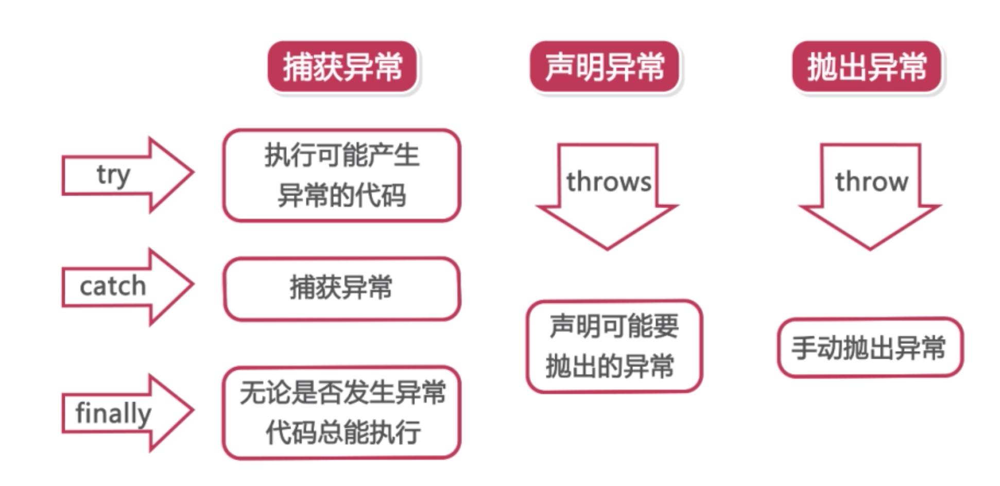
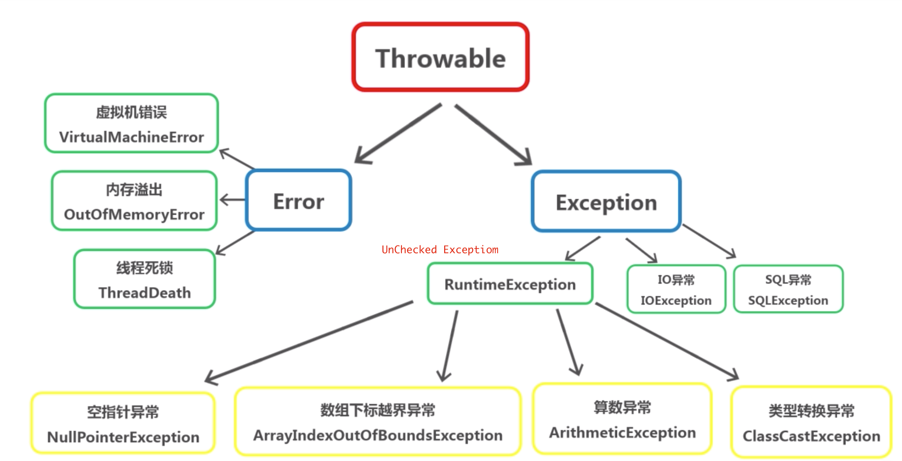
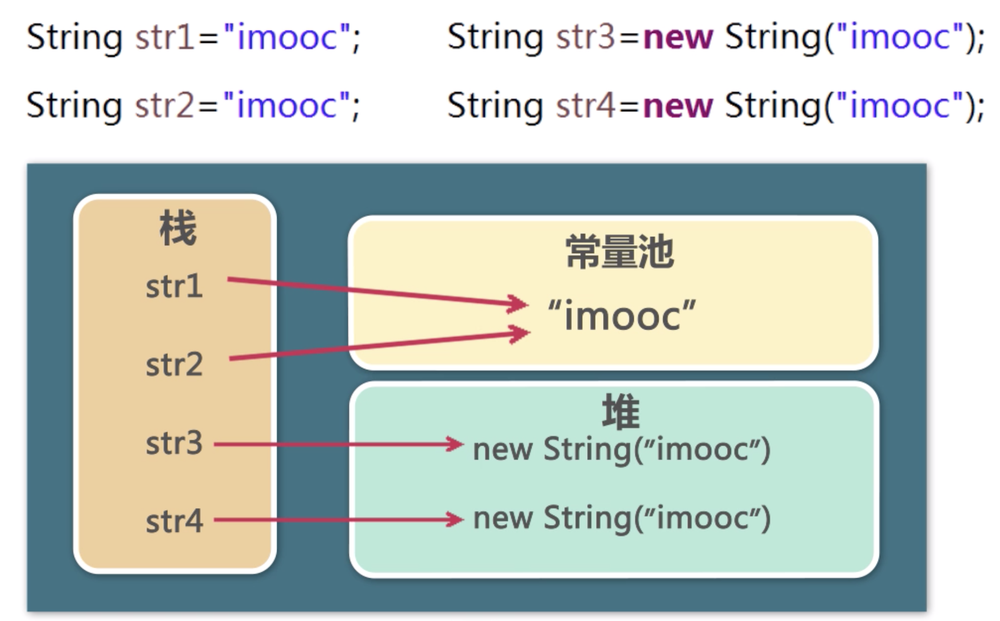
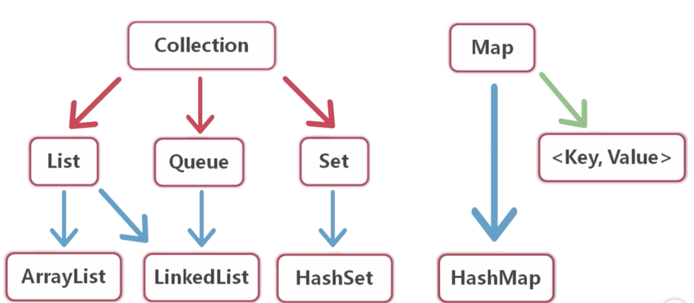

来源于慕课网Java零基础入门
好多基础的东西都忘记了，补起来！！
单例模式
基础概念
- 构造方法私有，含有一个该类静态私有对象，提供一个公有静态方法用于创建，获取静态对象
饿汉式
- 在类载入时就创建
- 空间换时间
- 线程安全
饱汉式
- 在第一次使用时创建
- 时间换空间
- 存在线程风险
应用场景
- 创建对象时占用资源过多，同时又需要用到该对象
- 要求对系统内资源统一读写（配置信息）
- 多个类的实例对象存在可能会引发程序的逻辑错误
抽象 abstract
static，final，private不能与abstract并存
抽象类
- 使逻辑更有意义 禁止实例化，编译阶段报错
抽象方法
- 必须要在一个抽象类中，不允许包含方法体，子类必须进行方法重写
接口 interface
不同类型的对象具有相同的能力
推荐命名方式以
I开头访问修饰符：public或默认
接口方法默认为public
接口中可以包含常量，仅写常量类型即可（不用 public static final）
JDK1.8起可以设置默认方法，可以在实现类中重写
1 | public interface ITest { |
- 接口中的静态方法
1 | public interface ITest { |
- 多接口重名常量冲突，要在子类中定义自己的常量，或者指定需要调用来自何处的常量
内部类
- 分类
- 成员
- 静态
- 方法
- 匿名
成员内部类
1 | class Outer { |
- 编译产生的文件
- Outer.class
- Outer$Inner.class
方法内部类
不能包含静态成员 外部类$1内部类.class
匿名内部类
- 仅使用一次的情况
- 外部类$数字.class
- 可以在构造代码块中完成初始化，不可以出现static
- 接口父类不能兼得
1 | public abstract class Person { |
异常
1 | Throwable --> Error |
- 异常相关关键词

- 异常类型

try, catch, finally中都有return，则finally里的return优先执行
异常链
Exception(..., Exception)exception.initCause(Exception)
基本数据类型
字符串转基本类型
- 包装类的
parse方法int a = Integer.parseInt("12");
valueOf方法 先将其转换为包装类，在通过自动拆箱int b = Integer.valueOf("12");
- 包装类的
缓存区(对象池） (-128, 127)，直接调用，不创建对象，否则实例化Integer，除了Float和Double
1 | Integer a = 100; // Integer a = Integer.valueOf(100); |
执行Integer x=400;这段代码会创建一个Integer对象，x的引用指向它；执行Integer y = x;这段代码，y的引用和x的引用指向了同一片内存空间。这时，x和y指向同一个对象。之后，执行x++，将会创建一个新的Integer对象401，然后x的引用指向新创建的对象。这时x和y不再指向同一个对象
String

1 | public class Test { |
当频繁操作时使用String会产生大量的废弃常量，推荐使用StringBuilder，非线程安全
StringBuilder的一些api- append(String str)
- delete(int start, int end)
- insert(int offset, String str)
- replace(int start, int end, String str)
集合
- 集合的体系结构

HashSet
- Object类中的方法重写
- hashCode判断数据在哪个存储区域
- 判断熟悉是否相等 equals在指定的存储区域中寻找
移除set中的一组数据
set.removeAll(set子集)
使用Collection.sort对其进行排序
实现特殊需求的排序，要实现java.util.Comparator接口
1 | // 降序 |
- java.lang.Comparatale 接口需要由类实现接口
1 |
|
泛型
- 泛型变量
1 | // 所有继承自Goods的类的实例都可以加入 |
- 泛型方法
public <T> void func(T t) {}public <T extends ... > void func(T t) {}public <T super ... > void func(T t) {}